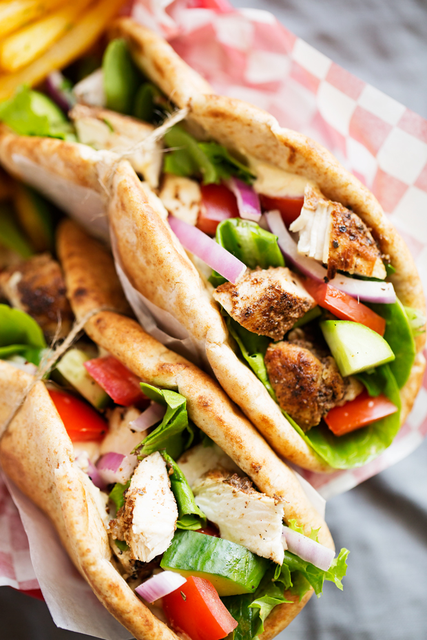

Chicken shawarma

Description
Chicken shawarma is a popular Middle Eastern dish consisting of marinated and grilled or roasted chicken that is thinly sliced. It is typically served in a warm pita bread or wrapped in a flatbread, accompanied by various toppings such as tahini sauce, pickles, tomatoes, and onions. The chicken is often seasoned with aromatic spices like cumin, coriander, garlic, and lemon juice, resulting in a flavorful and tender meat dish.
Ingredients
- Chicken thighs – boneless and skinless
- Spices – ground cumin, ground coriander, smoked paprika, turmeric, salt, garlic powder, cayenne pepper
- Lemon – juiced
- Olive oil – or other preferred high heat and neutral-flavored oil
How to make it
- Set out a 9 x 13 inch baking dish, a small mixing bowl, and a measuring cup.
- Place the chicken thighs in the baking dish. Measure all the spices into the small bowl, and mix well. Then mix the lemon juice and olive oil in the measuring cup.
- Toss the chicken thighs with the spice mixture, making sure to coat well on all sides. Then pour the lemon juice and olive oil over the top of the chicken. Cover and refrigerate for at least 2 hours, but up to 24 hours.
- When you’re ready to cook, you can choose to either grill the chicken or roast it in the oven.
- Once out of the oven, let the chicken rest for 5 minutes before slicing and wrapping.
back to main